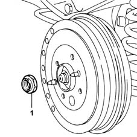
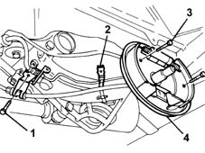
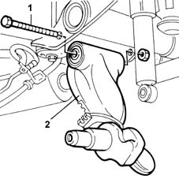
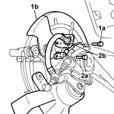
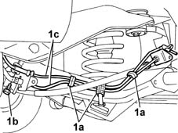
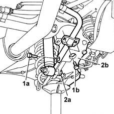
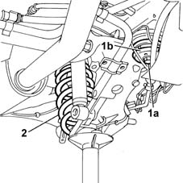

4420B34 rear suspension wishbone (one remaining)- r+r following op.4420b30
- Path
- Procedures > 44 SUSPENSION AND WHEELS > 4420 REAR SUSPENSION > 4420B rear suspension wishbones > 4420B34 rear suspension wishbone (one remaining)- r+r following op.4420b30
- Kind
- repair procedure (removal / refitting; the operation number is the code)
- Applies to
- all engines; all production periods
- Interactive page
- https://sloeber94.github.io/elrnDB-fMltpl/en/#/2891724
Applies to: all engines; all production periods
 Removing
Removing
 Refitting
RefittingPosition the vehicle on the ramp.
Completely raise the handbrake lever.
4450B11 WHEEL (one) rear - R.R. .
4450D70 hub cap of one rear wheel, l/h or r/h - r+r .
1. Undo the rear wheel hub nut.

Applies to: all engines; all production periods
Lower the handbrake lever.
Raise the car.
3320B30 lh or rh rear brake drum (one) r r .
4450D10 hub of one rear wheel, l/h or r/h - r+r with wheel removed .
1. Undo the bolt fixing the mounting bracket for the handbrake cable and the brake pipe.
2. Remove the rigid pipe for the rear drum brake cylinder from the spring on the track control arm.
3. Undo the bolts fixing the brake back plate.
4. Remove the brake back plate complete with shoes and brake cylinder and hang it on the bodyshell.

Applies to: all engines; all production periods
4420A40 l/h or r/h rear suspension coil spring (one) - r+r .
1. Undo the bolt fixing the rear track control arm to the axle.
2. Remove the rear track control arm.

Applies to: all engines; all production periods
Refitting
RemovingFit the rear track control arm and fix it using the bolt.
Tighten the nut fixing the track control arm to the axle to torque.
 | Fastening | Component | Ø | Value (daNm) |
|---|---|---|---|---|
- | Bolt | REAR WISHBONE | M16 x 1.5 | 15 |
4420A40 l/h or r/h rear suspension coil spring (one) - r+r .
Fit the rear brake back plate complete with shoes and brake cylinder and tighten the fixing bolts to torque.
| Fastening | Component | Ø | Value (daNm) |
|---|---|---|---|---|
- | Bolt | REAR BRAKE CARRIER DISC | M8 | 2.4 |
Fit the bolt for the mounting bracket for the handbrake cable and brake pipes and tighten to torque.
| Fastening | Component | Ø | Value (daNm) |
|---|---|---|---|---|
- | Bolt | HANDBRAKE LINKAGE MOUNTS | M8 | 2.5 |
Fit the rigid pipe for the rear drum brake cylinder on the spring on the track control arm.
4450D10 hub of one rear wheel, l/h or r/h - r+r with wheel removed .
3320B30 lh or rh rear brake drum (one) r r .
Lower the vehicle.
Completely raise the handbrake lever.
Tighten the rear wheel hub nut to torque.
| Fastening | Component | Ø | Value (daNm) |
|---|---|---|---|---|
- | Nut | REAR WHEEL HUB WITH BEARINGS | M22 x 1.5 | 28 |
Lower the handbrake lever.
4450D70 hub cap of one rear wheel, l/h or r/h - r+r .
4450B11 WHEEL (one) rear - R.R. .
Remove the car from the ramps.
Applies to: all engines; production: da 09/03, da 04/02 a 08/03
Removing
RefittingPosition the vehicle on the ramp.
Disconnect the battery negative terminal.
 | Name | Connector |
|---|---|---|
- | Battery |
4450B11 WHEEL (one) rear - R.R.
3310B57 rear calliper bracket - r r
1. Undo the bolt (1a) fixing the brake caliper flexible pipe to the disc shield (1b) and move the pipe.
2. Undo the bolt (2a) for the rear wheel rpm sensor and release the wiring (2b).

Applies to: all engines; production: da 09/03, da 04/02 a 08/03
3310B59 rear brake disc guard - r r
Remove the rear wheel hub cover.
- 4450D11 one rear wheel hub, lh or rh - r+r with wheels removed for versions with abs
1. Releaase the bands (1a) and undo the bolt (1b), then move the pipes (1c) away from the track control arm.

Applies to: all engines; production: da 09/03, da 04/02 a 08/03
Position a hydraulic jack under the track control arm.
1. Undo the bolt (1a) fixing the anti-roll bar to the track control arm and the bolts (1b) for the U-bolt.
2. Undo the bolt (2a) fixing the shock absorber to the track control arm (2b).

Applies to: all engines; production: da 09/03, da 04/02 a 08/03
1. Undo the bolt (1a) fixing the rear flexible mounting to the bodyshell, then remove the gasket (1b).
Gradually lower the hydraulic jack, discharging the tension at the shock absorber spring.
2. Remove the spring from the vehicle.

Applies to: all engines; production: da 09/03, da 04/02 a 08/03
1. Undo the bolt fixing the rear track control arm to the axle.
2. Remove the rear track control arm.
Applies to: all engines; all production periods
Refitting
RemovingPlace the rear track control arm in its original position and tighten the fixing bolt to the recommended torque.
| Fastening | Component | Ø | Value (daNm) |
|---|---|---|---|---|
- | Bolt | REAR WISHBONE | M16 x 1.5 | 15 |
Place the shock absorber spring in its original position.
Position the rear flexible mounting and tighten the bolt fixing it to the bodyshell to torque.
| Fastening | Component | Ø | Value (daNm) |
|---|---|---|---|---|
- | Bolt | FLEXIBLE BLOCKS RETAINING AXLE TO BODY | M12 x 1.25 | 12. |
Position the hydraulic jack under the track control arm, compress the shock absorber spring, then fit the bolt between the shock absorber and the track control arm and tighten it to the recommended torque.
| Fastening | Component | Ø | Value (daNm) |
|---|---|---|---|---|
- | Nut | REAR DAMPER | M12 x 1.25 | 8.8 |
Tighten the bolts for the U-bolts securing the anti-roll bar to the track control arm to the recommended torque.
| Fastening | Component | Ø | Value (daNm) |
|---|---|---|---|---|
- | Bolt | REAR ANTI-ROLL BAR | M8 | 3 |
Tighten the bolts fixing the anti-roll bar to the track control arm to the recommended torque.
| Fastening | Component | Ø | Value (daNm) |
|---|---|---|---|---|
- | Bolt | REAR ANTI-ROLL BAR | M10 x 1.25 | 5.6 |
Reposition the pipes on the track control arm, close the retaining clips, then tighten the fixing bolt.
- 4450D11 one rear wheel hub, lh or rh - r+r with wheels removed for versions with abs
Position the rear wheel hub cap.
3310B59 rear brake disc guard - r r
Tighten the bolt fixing the rpm sensor.
Tighten the bolt fixing the brake caliper pipe bracket to the disc shield.
3310B57 rear calliper bracket - r r
4450B11 WHEEL (one) rear - R.R.
Connect the battery negative terminal.
| Name | Connector |
|---|---|---|
- | Battery |
Remove the car from the ramps.
Topics linked from this page (9)
- 3310B48 rear brake disc - r r
- 3310B57 rear calliper bracket - r r
- 3310B59 rear brake disc guard - r r
- 3320B30 lh or rh rear brake drum (one) r r
- 4420A40 l/h or r/h rear suspension coil spring (one) - r+r
- 4450B11 WHEEL (one) rear - R.R.
- 4450D10 hub of one rear wheel, l/h or r/h - r+r with wheel removed
- 4450D70 hub cap of one rear wheel, l/h or r/h - r+r
- A1 Battery